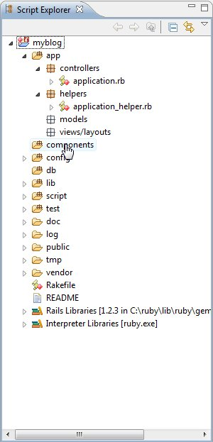

3rdRail provides Explorers for scripting and viewing Ruby on Rails application.
The Rails Explorer provides logical organization for Rails projects and is open by default in the Rails Perspective.
The following table shows the organization hierarchy for a Rails project in the :
| Container | Description |
|---|---|
|
Configuration |
Holds all configuration elements for the project including environment.rb, routes.rb, and database.yml files. |
|
Database |
Holds database migration and schema elements. |
|
Models |
Holds Model elements and provides attribute node sub-elements as defined in model. |
|
Resources |
Holds RESTful resources and their related routes. |
|
Controllers |
Holds Controllers and associated views including form partials. |
|
Helpers |
Holds Controller helpers. |
|
Layouts |
Holds layout elements. |
|
Tests |
Holds all test elements. |
|
components |
Holds MVC bundling components. |
|
lib |
Holds project related libraries. |
|
script |
Holds automation and generation script elements. |
|
doc |
Holds project documentation. |
|
log |
Holds log files. |
|
public |
Holds web server project collateral. |
|
tmp |
Holds tmp files. |
|
vendor |
Holds application dependent libraries and plugins. |
You can use standard Eclipse functionality such as copy/paste/delete, rename/remove, working sets and filters, and build paths. In addition:
The Script Explorer shows a directory-oriented view of your project components. The hierarchy is derived from the project build paths. You can also open and browse the contents of external script folders.

In the Ruby Perspective, the Script Explorer is open by default on the left side of the workspace.
In the Rails Perspective, you can open the Script Explorer from the
Window Show View
Show View menu.
menu.
You can use standard Eclipse functionality such as copy/paste/delete, rename/remove, working sets and filters, and build paths. In addition:
 CodeGear brand
and product names are service marks, trademarks or registered trademarks of Borland Software
Corporation in the United States and other countries.
CodeGear brand
and product names are service marks, trademarks or registered trademarks of Borland Software
Corporation in the United States and other countries.